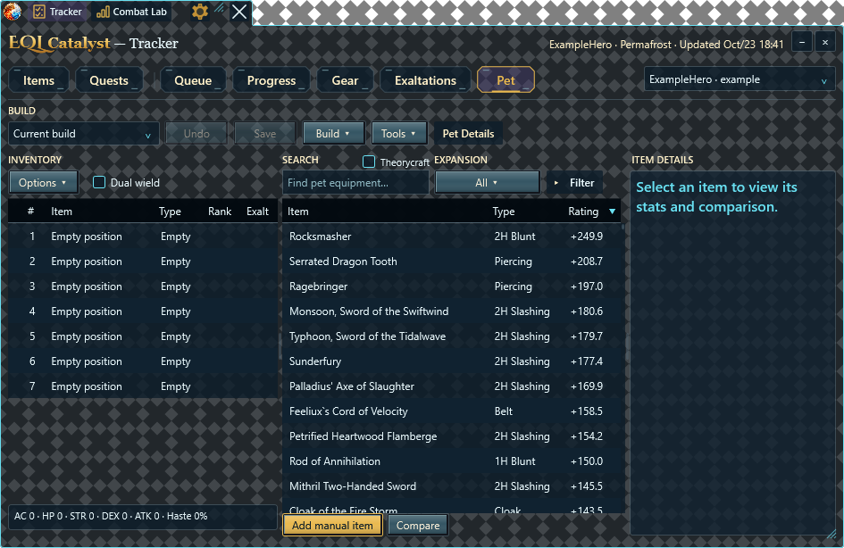
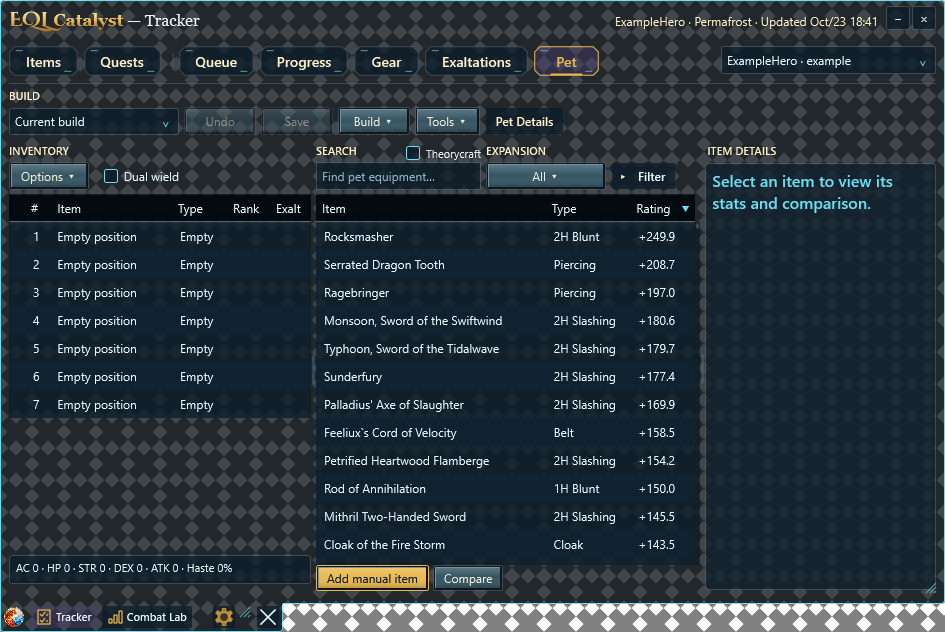
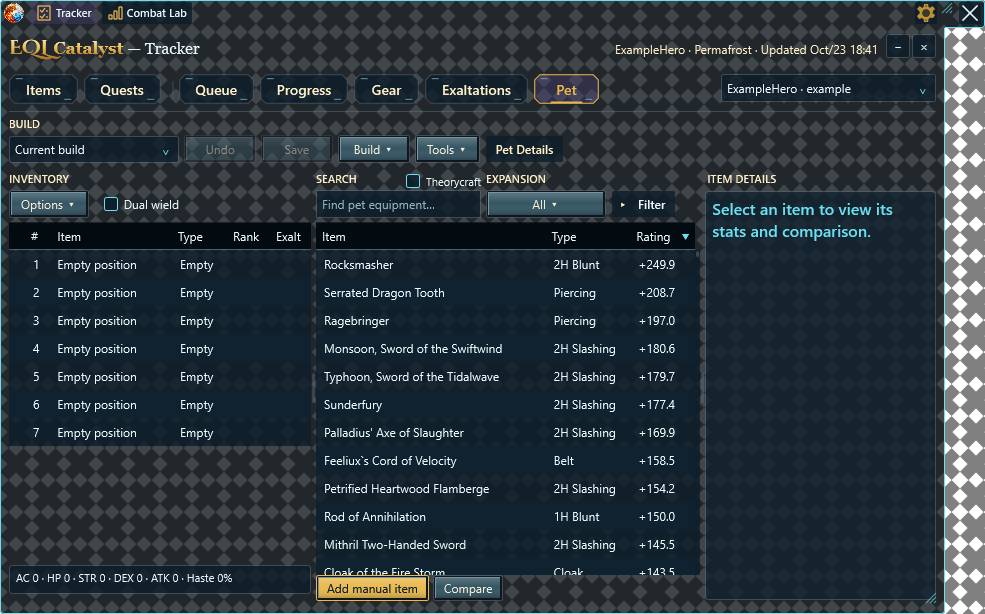
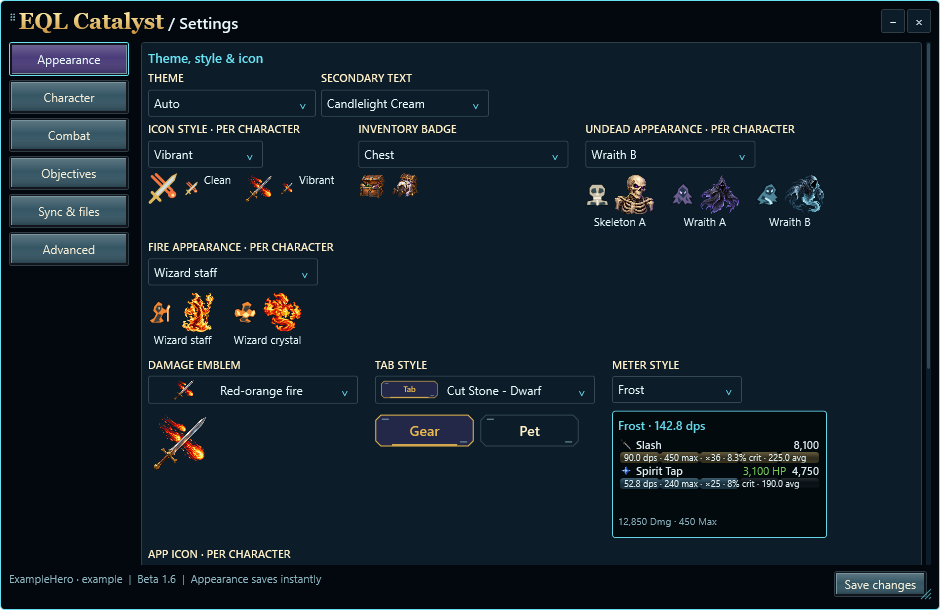
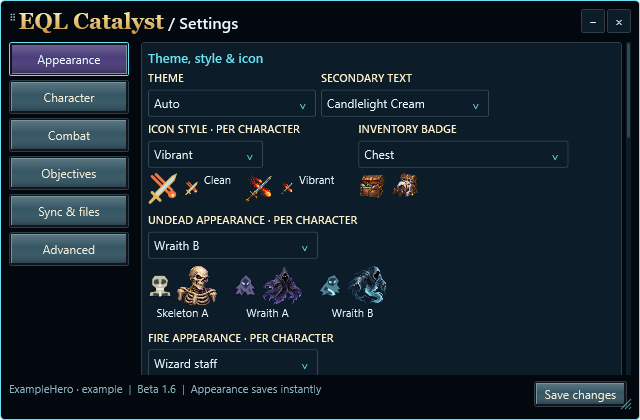

Beta 1.6 · workspace and session review
Actual WPF controls with synthetic data. The toolbar stays translucent, its grip is separated from Close, and its attached panel moves through a native positioning transaction. Session selection and zone/named-NPC filters apply to both Damage and Healing.
Help · Validation · Seven new artwork concepts and archived gallery
Toolbar
Attached panel below / above and unequal widths



Independent Fire / Undead appearance

Minimum width
